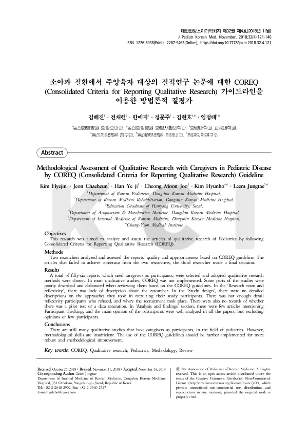

Methodological Assessment of Qualitative Research with Caregivers in Pediatric Disease by COREQ (Consolidated Criteria for Reporting Qualitative Research) Guideline
Kim H, Jeon C, Han YJ, Cheong MJ, Kim H, Leem J
The Journal of Pediatrics of Korean Medicine 32(4):121-140

첫 장 · 오픈액세스First page · open access
논문 소개Summary
질적연구는 숫자로 잡히지 않는 경험을 다룹니다. 그래서 무엇을 어떻게 했는지 적어 두지 않으면 읽는 사람이 그 결과를 판단할 수 없습니다. 누가 면담했는지, 참여자를 어떻게 골랐는지, 거절한 사람은 몇이었는지에 따라 같은 자료도 다르게 읽히기 때문입니다. 이를 위해 질적연구 보고에는 COREQ 라는 점검표가 있습니다. 소아 질환에서는 아이가 스스로 말하기 어려우므로 보호자를 면담하는 일이 많습니다. 이 논문은 그런 질적연구들이 점검표를 얼마나 지켰는지 따져 본 것입니다.
두 연구자가 각각 보고의 질과 적절성을 평가하고 합의에 이르지 못한 논문은 세 번째 연구자가 최종 판단했습니다. 보호자를 참여자로 삼은 질적연구 56편이 선정되었습니다.
결과는 좋지 않았습니다. 대부분의 질적연구에서 COREQ 가 적용되지 않았고, 점검표에 비추어 보면 서술이 부실하거나 자세하지 않은 대목이 많았습니다.
어느 자리가 비어 있었는지가 구체적입니다. 연구진과 성찰성 영역에서는 연구자 자신에 대한 기술이 모자랐습니다. 연구설계 영역에서는 참여자를 어떻게 모집했는지에 대한 자세한 설명이 없었고, 참여를 거절한 사람과 그 이유, 면담 장소에 대한 기술도 충분하지 않았습니다. 예비 검사를 했는지, 자료가 포화에 이르렀는지에 대한 기록도 없었습니다. 분석과 결과 영역에서는 참여자 확인을 언급한 논문이 드물었습니다. 다만 참여자의 주된 의견은 모든 논문에서 잘 분석되어 있었습니다.
질적연구의 결과를 인용하려면 그 연구가 어떻게 수행되었는지를 알아야 하는데, 지금의 보고 관행으로는 그것을 알 수 없다는 것이 이 논문의 결론입니다. 결과를 모으는 일보다 결과를 믿을 수 있는지 세어 보는 일을 먼저 한 셈입니다.
Qualitative research deals with experience that numbers cannot capture. Unless what was done is set down, a reader cannot judge the findings — who conducted the interviews, how participants were chosen, how many declined, all change how the same material reads. Hence the COREQ checklist for reporting qualitative research. In paediatric disease, where children cannot readily speak for themselves, caregivers are often the ones interviewed. This paper examines how far such studies observed the checklist.
Two researchers each assessed the quality and appropriateness of reporting, with a third making the final decision where they could not agree. Fifty-six qualitative studies using caregivers as participants were selected.
The result was poor. In most of them COREQ had not been applied, and measured against the checklist many passages were thinly or vaguely described.
Which places stood empty is specific. Under research team and reflexivity, description of the researchers themselves was lacking. Under study design, there was no detailed account of how participants were recruited, nor sufficient description of those who declined and why, nor of where the interviews took place. There was no record of whether a pilot test had been run or whether data saturation had been reached. Under analysis and findings, few articles mentioned participant checking. The main opinions of participants, however, were well analysed in every paper.
To cite the findings of a qualitative study one must know how it was conducted — and under current reporting practice one cannot. That is this paper's conclusion. Counting whether findings can be trusted came before gathering the findings themselves.
인용Cite
Kim H, Jeon C, Han YJ, Cheong MJ, Kim H, Leem J. Methodological Assessment of Qualitative Research with Caregivers in Pediatric Disease by COREQ (Consolidated Criteria for Reporting Qualitative Research) Guideline. The Journal of Pediatrics of Korean Medicine. 2018;32(4):121-140. doi:10.7778/jpkm.2018.32.4.121